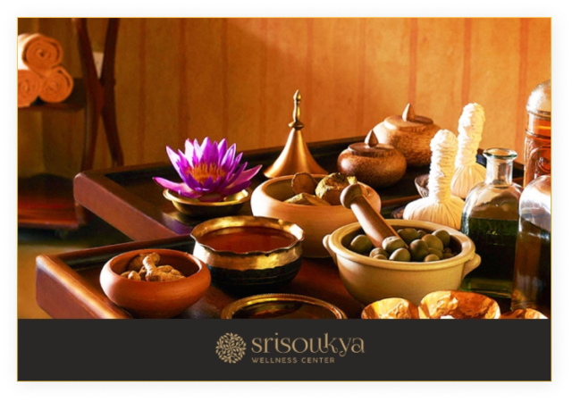
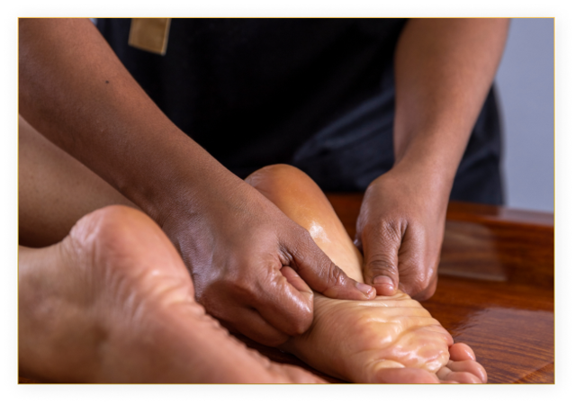

Januvasty is one of the most effective and time-tested Ayurvedic treatments for chronic knee pain, stiffness, inflammation, and injury. Warm Ayurvedic oils that are pain-relieving and soothing are pooled on the affected knee joint for a period of time, making a boundary with gram flour, followed by gentle massage, or abhyanga. The ayurvedic oils and medicines for the treatment will be selected based on the patient and the condition.
The black gram flour should be thoroughly mixed with hot water to make thick dough. 1-2 table spoons of flour should be mixed with water loosely to form a paste. The thick dough should be shaped as about of 3 inches height, 1 inch width and length sufficient to form a ring around the required area. Usually it should be 30 cm for a medium sized adult.
The knee joint should be completely exposed and if site of manipulation is hairy, it must be shaved clearly. The patient must then be allowed to lie comfortably over the cot, in supine position. Such position is prescribed for uras and it is named as urovasti. If the procedure is to be done on posterior part, the patient is made to lie on prone position.
The area of application should be thoroughly cleaned and flour dough should be pasted over the line, marked around knee joint like a ring. It should be then reinforced by pressing and sealed properly by flour paste to avoid leakage of oil. In addition, the cotton ribbon should be pasted around the wall, completely closing the margin between skin and dough wall. It is then allowed to set properly.
The oil should be warmed over hot water bath, usually up to 38oC – 40oC. The warmed oil should be them poured uniformly into bund constructed up to an extent that oil level stands up to 2 inches above the skin level. It should be allowed to remain there for prescribed time. The temperature of oil must be maintained throughout the procedure by taking some oil out using cotton and replaced by same amount of warmed oil.